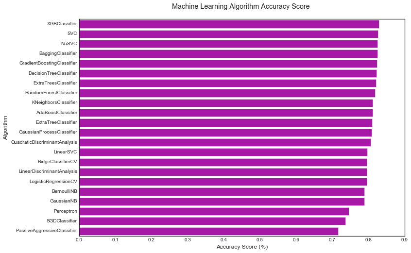

File "D:\ANACONDA\lib\site-packages\pandas\core\generic.py", line 2672, in __getattr__
return object.__getattribute__(self, name)
AttributeError: 'Series' object has no attribute 'type'
In [100]: for x in data1_x:
...: if data1[x].dtype != 'float64':
...: print('Survival Correlation by:',x)
...: print(data1[[x, Target[0]]].groupby(x, as_index=False).mean())
...:
Survival Correlation by: Sex
Sex Survived
0 female 0.742038
1 male 0.188908
Survival Correlation by: Pclass
Pclass Survived
0 1 0.629630
1 2 0.472826
2 3 0.242363
Survival Correlation by: Embarked
Embarked Survived
0 C 0.553571
1 Q 0.389610
2 S 0.339009
Survival Correlation by: Title
Title Survived
0 Master 0.575000
1 Misc 0.444444
2 Miss 0.697802
3 Mr 0.156673
4 Mrs 0.792000
Survival Correlation by: SibSp
SibSp Survived
0 0 0.345395
1 1 0.535885
2 2 0.464286
3 3 0.250000
4 4 0.166667
5 5 0.000000
6 8 0.000000
Survival Correlation by: Parch
Parch Survived
0 0 0.343658
1 1 0.550847
2 2 0.500000
3 3 0.600000
4 4 0.000000
5 5 0.200000
6 6 0.000000
Survival Correlation by: FamilySize
FamilySize Survived
0 1 0.303538
1 2 0.552795
2 3 0.578431
3 4 0.724138
4 5 0.200000
5 6 0.136364
6 7 0.333333
7 8 0.000000
8 11 0.000000
Survival Correlation by: IsAlone
IsAlone Survived
0 0 0.505650
1 1 0.303538
In [101]: plt.figure(figsize=[16,12])
Out[101]: <matplotlib.figure.Figure at 0xb9b9e10><matplotlib.figure.Figure at 0xb9b9e10>
In [102]: plt.boxplot(x=data1['Fare'], showmeans=True, meanline=True)
Out[102]:
{'boxes': [<matplotlib.lines.Line2D at 0xbbe6550>],
'caps': [<matplotlib.lines.Line2D at 0xbbf79b0>,
<matplotlib.lines.Line2D at 0xbbf7f60>],
'fliers': [<matplotlib.lines.Line2D at 0xbbfde48>],
'means': [<matplotlib.lines.Line2D at 0xbbfd7f0>],
'medians': [<matplotlib.lines.Line2D at 0xbbfd198>],
'whiskers': [<matplotlib.lines.Line2D at 0xbbe6cc0>,
<matplotlib.lines.Line2D at 0xbbe6e10>]}
In [103]: plt.title('Fare Boxplot')
Out[103]: <matplotlib.text.Text at 0xbe3ea58>
In [104]: plt.figure(figsize=[16,12])
Out[104]: <matplotlib.figure.Figure at 0xbc3f320><matplotlib.figure.Figure at 0xbc3f320>
In [105]: plt.subplot(231)
Out[105]: <matplotlib.axes._subplots.AxesSubplot at 0xbc625c0>
In [106]: plt.boxplot(x=data1['Fare'], showmeans=True, meanline=True, title='Fare Boxplot', ylabel='Fare ($)')
Traceback (most recent call last):
File "<ipython-input-106-1f3348b083a2>", line 1, in <module>
plt.boxplot(x=data1['Fare'], showmeans=True, meanline=True, title='Fare Boxplot', ylabel='Fare ($)')
TypeError: boxplot() got an unexpected keyword argument 'title'
In [107]: plt.boxplot(x=data1['Fare'], showmeans=True, meanline=True)
Out[107]:
{'boxes': [<matplotlib.lines.Line2D at 0xc003198>],
'caps': [<matplotlib.lines.Line2D at 0xc00c5f8>,
<matplotlib.lines.Line2D at 0xc00cc50>],
'fliers': [<matplotlib.lines.Line2D at 0xc011b70>],
'means': [<matplotlib.lines.Line2D at 0xc011438>],
'medians': [<matplotlib.lines.Line2D at 0xc00cda0>],
'whiskers': [<matplotlib.lines.Line2D at 0xc003908>,
<matplotlib.lines.Line2D at 0xc003f60>]}
In [108]: plt.title('Fare Boxplot')
Out[108]: <matplotlib.text.Text at 0xc22acf8>

In [109]: plt.ylabel('Fare ($)')
Out[109]: <matplotlib.text.Text at 0xc050cf8>
In [110]: plt.subplot(232)
...: plt.boxplot(data1['Age'], showmeans = True, meanline = True)
...: plt.title('Age Boxplot')
...: plt.ylabel('Age (Years)')
...:
Out[110]: <matplotlib.text.Text at 0xd570978>
In [111]: plt.subplot(233)
...: plt.boxplot(data1['FamilySize'], showmeans = True, meanline = True)
...: plt.title('Family Size Boxplot')
...: plt.ylabel('Family Size (#)')
...:
Out[111]: <matplotlib.text.Text at 0xc3e7a90>
In [112]: plt.subplot(234)
...: plt.hist(x = [data1[data1['Survived']==1]['Fare'], data1[data1['Survived']==0]['Fare']],
...: stacked=True, color = ['g','r'],label = ['Survived','Dead'])
...: plt.title('Fare Histogram by Survival')
...: plt.xlabel('Fare ($)')
...: plt.ylabel('# of Passengers')
...: plt.legend()
...:
Out[112]: <matplotlib.legend.Legend at 0x5bba90>
In [113]: plt.subplot(235)
...: plt.hist(x = [data1[data1['Survived']==1]['Age'], data1[data1['Survived']==0]['Age']],
...: stacked=True, color = ['g','r'],label = ['Survived','Dead'])
...: plt.title('Age Histogram by Survival')
...: plt.xlabel('Age (Years)')
...: plt.ylabel('# of Passengers')
...: plt.legend()
...:
Out[113]: <matplotlib.legend.Legend at 0xc4b7eb8>
In [114]: plt.subplot(236)
...: plt.hist(x = [data1[data1['Survived']==1]['FamilySize'], data1[data1['Survived']==0]['FamilySize']],
...: stacked=True, color = ['g','r'],label = ['Survived','Dead'])
...: plt.title('Family Size Histogram by Survival')
...: plt.xlabel('Family Size (#)')
...: plt.ylabel('# of Passengers')
...: plt.legend()
...:
Out[114]: <matplotlib.legend.Legend at 0xd9309e8>
In [115]: fig, saxis = plt.subplots(2, 3, figsize=(16, 12))

In [116]: sns.barplot(x='Embarked', y='Survived', data=data1, ax=saxis[0,0])
Out[116]: <matplotlib.axes._subplots.AxesSubplot at 0xd7a5fd0>
In [117]: sns.barplot(x='Pclass', y='Survived', order=[1,2,3], data=data1, ax=saxis[0,1])
Out[117]: <matplotlib.axes._subplots.AxesSubplot at 0xd7eb2e8>
In [118]: sns.barplot(x = 'IsAlone', y = 'Survived', order=[1,0], data=data1, ax = saxis[0,2])
Out[118]: <matplotlib.axes._subplots.AxesSubplot at 0xd806c50>
In [119]: sns.pointplot(x = 'FareBin', y = 'Survived', data=data1, ax = saxis[1,0])
Out[119]: <matplotlib.axes._subplots.AxesSubplot at 0xd86f908>
In [120]: sns.pointplot(x = 'AgeBin', y = 'Survived', data=data1, ax = saxis[1,1])
Out[120]: <matplotlib.axes._subplots.AxesSubplot at 0xd8bd550>
In [121]: sns.pointplot(x = 'FamilySize', y = 'Survived', data=data1, ax = saxis[1,2])
Out[121]: <matplotlib.axes._subplots.AxesSubplot at 0xd8f6dd8>
In [122]: fig
Out[122]:
In [123]: fig,(maxis1, maxis2) = plt.subplots(1, 2, figsize=(14,12))
In [124]: sns.pointplot(x='FamilySize', y='Survived', hue='Sex', data=data1, palette={'male':'blue', 'female':'pink'},
...: markers=['*', 'o'],linestyles=['-','--'], ax=maxis1)
Out[124]: <matplotlib.axes._subplots.AxesSubplot at 0xda8ebe0>
In [125]: sns.plotpoint(x='Pclass', y='Survived', hue='Sex', data=data1,
...: palette={'male':'blue', 'female':'pink'},
...: markers=['*','o'],linestyles=['-', '--'], ax=maxis2)
Traceback (most recent call last):
File "<ipython-input-125-272d57c63aaf>", line 1, in <module>
sns.plotpoint(x='Pclass', y='Survived', hue='Sex', data=data1,
AttributeError: module 'seaborn' has no attribute 'plotpoint'
In [126]: sns.pointplot(x='Pclass', y='Survived', hue='Sex', data=data1,
...: palette={'male':'blue', 'female':'pink'},
...: markers=['*','o'],linestyles=['-', '--'], ax=maxis2)
Out[126]: <matplotlib.axes._subplots.AxesSubplot at 0xda07358>
In [127]: plt
Out[127]: <module 'matplotlib.pyplot' from 'D:\\ANACONDA\\lib\\site-packages\\matplotlib\\pyplot.py'>
In [128]: fig
Out[128]:
In [129]: e = sns.FacetGrid(data1, col='Embarked')
In [130]: e.map(sns.pointplot,'Pclass', 'Survived', 'Sex', ci=95.0, palette='deep')
Traceback (most recent call last):
File "<ipython-input-130-6a2968662c88>", line 1, in <module>
e.map(sns.pointplot,'Pclass', 'Survived', 'Sex', ci=95.0, palette='deep')
File "D:\ANACONDA\lib\site-packages\seaborn\axisgrid.py", line 706, in map
ax = self.facet_axis(row_i, col_j)
File "D:\ANACONDA\lib\site-packages\seaborn\axisgrid.py", line 837, in facet_axis
plt.sca(ax)
File "D:\ANACONDA\lib\site-packages\matplotlib\pyplot.py", line 915, in sca
raise ValueError("Axes instance argument was not found in a figure.")
ValueError: Axes instance argument was not found in a figure.
In [131]: e = sns.FacetGrid(data1, col='Embarked')

In [132]: e.map(sns.pointplot,'Pclass', 'Survived', 'Sex', ci=95.0, palette='deep')
Traceback (most recent call last):
File "<ipython-input-132-6a2968662c88>", line 1, in <module>
e.map(sns.pointplot,'Pclass', 'Survived', 'Sex', ci=95.0, palette='deep')
File "D:\ANACONDA\lib\site-packages\seaborn\axisgrid.py", line 706, in map
ax = self.facet_axis(row_i, col_j)
File "D:\ANACONDA\lib\site-packages\seaborn\axisgrid.py", line 837, in facet_axis
plt.sca(ax)
File "D:\ANACONDA\lib\site-packages\matplotlib\pyplot.py", line 915, in sca
raise ValueError("Axes instance argument was not found in a figure.")
ValueError: Axes instance argument was not found in a figure.
In [133]: a = sns.FacetGrid( data1, hue = 'Survived', aspect=4 )
...: a.map(sns.kdeplot, 'Age', shade= True )
...: a.set(xlim=(0 , data1['Age'].max()))
...: a.add_legend()
...:
Out[133]: <seaborn.axisgrid.FacetGrid at 0xe858dd8>

In [134]: e = sns.FacetGrid(data1, col = 'Embarked')
...: e.map(sns.pointplot, 'Pclass', 'Survived', 'Sex', ci=95.0, palette = 'deep')
...: e.add_legend()
...:
Out[134]: <seaborn.axisgrid.FacetGrid at 0xe8cb4a8>
In [135]: h = sns.FacetGrid(data1, row = 'Sex', col = 'Pclass', hue = 'Survived')
...: h.map(plt.hist, 'Age', alpha = .75)
...: h.add_legend()
...:
Out[135]: <seaborn.axisgrid.FacetGrid at 0xe9400b8>
In [136]: pp = sns.pairplot(data1, hue = 'Survived', palette = 'deep', size=1.2, diag_kind = 'kde', diag_kws=dict(shade=True), plot_kws=dict(s=10) )
...: pp.set(xticklabels=[])
...:
Out[136]: <seaborn.axisgrid.PairGrid at 0xfeb83c8>
In [136]:
In [137]: def correlation_heatmap(df):
...: _, ax = plt.subplots(figsize=(14,12))
...: colormap = sns.diverging_palette(220, 10, as_cmap=True)
...: _ = sns.heatmap(
...: df.corr(),
...: cmap=colormap,
...: square=True,
...: cbar_kws={'shrink':.9}
...: ax=ax,
...: annot=True,
...: linewidths=0.1, vmax=1.0, linecolor='white',
...: annot_kws = {'fontsize':12}
...: )
File "<ipython-input-137-595d036eed17>", line 9
ax=ax,
^
SyntaxError: invalid syntax
In [138]: def correlation_heatmap(df):
...: _, ax = plt.subplots(figsize=(14,12))
...: colormap = sns.diverging_palette(220, 10, as_cmap=True)
...: _ = sns.heatmap(
...: df.corr(),
...: cmap=colormap,
...: square=True,
...: cbar_kws={'shrink':.9},
...: ax=ax,
...: annot=True,
...: linewidths=0.1, vmax=1.0, linecolor='white',
...: annot_kws = {'fontsize':12}
...: )
...: plt.title('Pearson Correlation of Features', y=1.05, size=15)
...:
In [139]: correlation_heatmap(data1)
In [139]:
In [140]: MLA = [
...: ensemble.AdaBoostClassifier(),
...: ensemble.BaggingClassifier(),
...: ensemble.ExtraTreesClassifier(),
...: ensemble.GradientBoostingClassifier(),
...: ensemble.RandomForestClassifier(),
...: gaussian_process.GaussianProcessClassifier(),
...: linear_model.LogisticRegressionCV(),
...: linear_model.PassiveAggressiveClassifier(),
...: linear_model.RidgeClassifierCV(),
...: linear_model.SGDClassifier(),
...: linear_model.Perceptron(),
...: naive_bayes.BernoulliNB(),
...: naive_bayes.GaussianNB(),
...: neighbors.KNeighborsClassifier(),
...: svm.SVC(probability=True),
...: svm.NuSVC(probability=True),
...: svm.LinearSVC(),
...: tree.DecisionTreeClassifier(),
...: tree.ExtraTreeClassifier(),
...: discriminant_analysis.LinearDiscriminantAnalysis(),
...: discriminant_analysis.QuadraticDiscriminantAnalysis(),
...: XGBClassifier()
...: ]
In [141]: cv_split = model_selection.ShuffleSplit(n_splits==10, test_size=.3,
...: train_size=.6, random_state=0)
Traceback (most recent call last):
File "<ipython-input-141-b49e884f2774>", line 1, in <module>
cv_split = model_selection.ShuffleSplit(n_splits==10, test_size=.3,
NameError: name 'n_splits' is not defined
In [142]: cv_split = model_selection.ShuffleSplit(n_splits=10, test_size=.3,
...: train_size=.6, random_state=0)
In [143]: MLA_columns = ['MLA Name', 'MLA Parameters','MLA Train Accuracy Mean', 'MLA Test Accuracy Mean', 'MLA Test Accuracy 3*STD' ,'MLA Time']
In [144]: MLA_predict = data1[Target]
In [145]: MLA_compare = pd.DataFrame(columns=MLA_columns)
In [146]: row_index = 0
In [147]: for alg in MLA:
...: MLA_name = alg.__class__.__name__
...: MLA_compare.loc[row_index, 'MLA Name'] = MLA_name
...: MLA_compare.loc[row_index, 'MLA Parameters'] = str(alg.get_params())
...: cv_results = model_selection.cross_validate(alg, data1[data1_x_bin], data1[Target], cv = cv_split)
...:
...: MLA_compare.loc[row_index, 'MLA Time'] = cv_results['fit_time'].mean()
...: MLA_compare.loc[row_index, 'MLA Train Accuracy Mean'] = cv_results['train_score'].mean()
...: MLA_compare.loc[row_index, 'MLA Test Accuracy Mean'] = cv_results['test_score'].mean()
...: MLA_compare.loc[row_index, 'MLA Test Accuracy 3*STD'] = cv_results['test_score'].std()*3
...: alg.fit(data1[data1_x_bin], data1[Target])
...: MLA_predict[MLA_name] = alg.predict(data1[data1_x_bin])
...:
...: row_index+=1
...:
In [148]: MLA_compare.sort_values(by = ['MLA Test Accuracy Mean'], ascending = False, inplace = True)
In [149]: MLA_compare
Out[149]:
MLA Name \
21 XGBClassifier
14 SVC
15 NuSVC
1 BaggingClassifier
3 GradientBoostingClassifier
17 DecisionTreeClassifier
2 ExtraTreesClassifier
4 RandomForestClassifier
13 KNeighborsClassifier
0 AdaBoostClassifier
18 ExtraTreeClassifier
5 GaussianProcessClassifier
20 QuadraticDiscriminantAnalysis
16 LinearSVC
8 RidgeClassifierCV
19 LinearDiscriminantAnalysis
6 LogisticRegressionCV
11 BernoulliNB
12 GaussianNB
10 Perceptron
9 SGDClassifier
7 PassiveAggressiveClassifier
MLA Parameters MLA Train Accuracy Mean \
21 {'colsample_bytree': 1, 'max_depth': 3, 'rando... 0.854869
14 {'kernel': 'rbf', 'cache_size': 200, 'coef0': ... 0.838577
15 {'kernel': 'rbf', 'cache_size': 200, 'coef0': ... 0.836142
1 {'bootstrap': True, 'base_estimator': None, 'm... 0.891573
3 {'min_impurity_decrease': 0.0, 'max_depth': 3,... 0.867978
17 {'min_impurity_decrease': 0.0, 'max_depth': No... 0.895131
2 {'min_impurity_decrease': 0.0, 'min_weight_fra... 0.895131
4 {'min_impurity_decrease': 0.0, 'min_weight_fra... 0.891948
13 {'algorithm': 'auto', 'n_jobs': 1, 'metric_par... 0.852434
0 {'algorithm': 'SAMME.R', 'learning_rate': 1.0,... 0.821348
18 {'min_impurity_decrease': 0.0, 'max_depth': No... 0.895131
5 {'kernel': None, 'n_restarts_optimizer': 0, 'o... 0.873408
20 {'reg_param': 0.0, 'store_covariance': False, ... 0.820225
16 {'penalty': 'l2', 'class_weight': None, 'tol':... 0.799251
8 {'fit_intercept': True, 'class_weight': None, ... 0.797753
19 {'tol': 0.0001, 'n_components': None, 'store_c... 0.797566
6 {'fit_intercept': True, 'class_weight': None, ... 0.802622
11 {'binarize': 0.0, 'fit_prior': True, 'alpha': ... 0.796255
12 {'priors': None} 0.803184
10 {'fit_intercept': True, 'class_weight': None, ... 0.75412
9 {'average': False, 'fit_intercept': True, 'cla... 0.740637
7 {'average': False, 'fit_intercept': True, 'cla... 0.724345
MLA Test Accuracy Mean MLA Test Accuracy 3*STD MLA Time
21 0.829104 0.0502611 0.0770044
14 0.826493 0.0416592 0.0534031
15 0.825373 0.0466403 0.0544031
1 0.824627 0.0456079 0.0361021
3 0.823881 0.0469082 0.132308
17 0.822761 0.0548964 0.00340018
2 0.821269 0.0584774 0.0266015
4 0.818657 0.0619628 0.0283016
13 0.812313 0.0666115 0.0126007
0 0.812313 0.0472409 0.127607
18 0.810821 0.0639237 0.00330017
5 0.809701 0.0421823 0.441825
20 0.806343 0.0776272 0.00810051
16 0.797388 0.0485491 0.0504029
8 0.795896 0.0513097 0.0512029
19 0.795896 0.0532276 0.0194011
6 0.795149 0.0683569 0.206812
11 0.789552 0.0503607 0.00510025
12 0.788806 0.0867375 0.00380023
10 0.745896 0.209986 0.00400021
9 0.73694 0.250619 0.00400019
7 0.716791 0.35269 0.0236014
In [150]: sns.barplot(x='MLA Test Accuracy Mean', y = 'MLA Name', data = MLA_compare, color = 'm')
Out[150]: <matplotlib.axes._subplots.AxesSubplot at 0xe7f6518>
In [151]: sns.barplot(x='MLA Test Accuracy Mean', y = 'MLA Name', data = MLA_compare, color = 'm')
...:
...: #prettify using pyplot: https://matplotlib.org/api/pyplot_api.html
...: plt.title('Machine Learning Algorithm Accuracy Score \n')
...: plt.xlabel('Accuracy Score (%)')
...: plt.ylabel('Algorithm')
...:
Out[151]: <matplotlib.text.Text at 0x1651ab38>

In [152]: